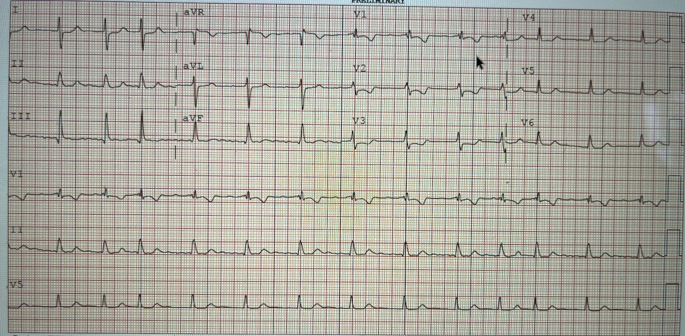
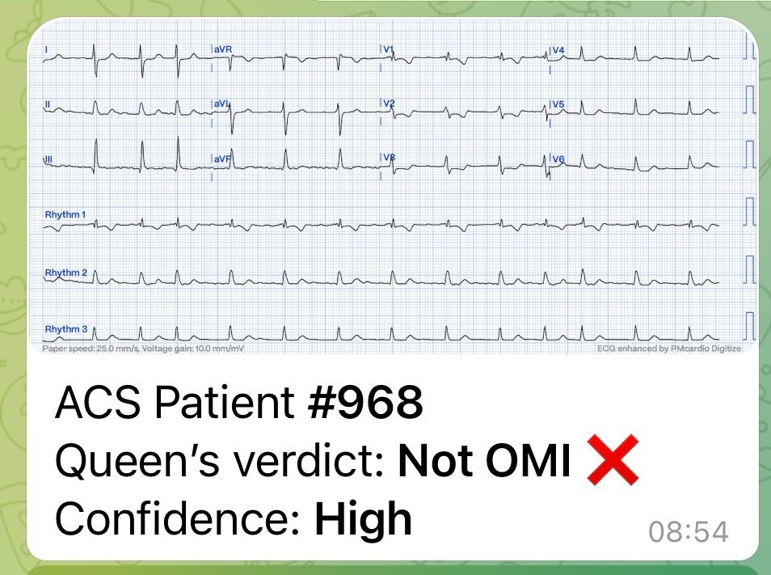
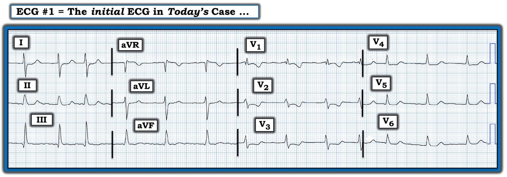

07/07/2023 — Một cựu bác sĩ nội trú đã nhắn tin gửi bản ghi này cho tôi. Một phụ nữ 80 mấy tuổi đến khám vì đau ngực và khó thở.
Bản dịch tiếng Việt của bài "This was texted to me by a former resident. An 80-something woman who presented with chest pain and dyspnea." – Dr. Smith’s ECG Blog. Giữ nguyên toàn bộ 4 hình ảnh của bản gốc.
Bản ghi này được nhắn tin gửi cho tôi. Một phụ nữ 80 mấy tuổi đến khám vì đau ngực và khó thở.


Bạn nghĩ gì?
Nhịp có vẻ là rung nhĩ. Dù thế nào đi nữa, đây rõ ràng là một nhịp trên thất. Có ST chênh xuống đáng kể ở V2-V4. Đây có phải là OMI thành sau không?
Trước khi vội đưa ra bất kỳ kết luận nào về ý nghĩa của các bất thường ST-T, trước hết bạn phải chắc chắn rằng chúng không phải là hậu quả (thứ phát) của một bất thường QRS nào đó. Bạn có thấy bất thường nào như vậy không?
Có sóng R lớn ở V1. Đây có phải là RBBB không? Không, đây không phải RBBB. QRS không đủ rộng, không có sóng S rộng ở V5 và V6.
Liệu có phải là phì đại thất phải (RVH) không?
Hãy tìm trục lệch phải. Quả thật, có sóng S sâu ở chuyển đạo I: trục lệch phải.
Đây là RVH. Và RVH thường có những bất thường tái cực thứ phát như vậy: ST chênh xuống (STD) ở V1-V3, thường kèm cả sóng T đảo ngược.
Xem các ca RVH sau:
Elderly woman w shortness of breath and an ECG that helps to understand it (Phụ nữ lớn tuổi khó thở và một điện tâm đồ giúp hiểu được tình trạng này)
Vậy nên tôi nhắn lại:
“Toàn bộ ST chênh xuống là do RVH. Thấy trục lệch phải chứ?? Và R/S ở V1 > 1. (Sóng R lớn ở V1)”
Và anh ấy trả lời:
“À đúng rồi. Khớp đấy. Siêu âm tại giường của em thấy thất phải to. Cảm ơn thầy!!”
Tìm được một kết quả siêu âm tim chính thức cũ từ 6 tháng trước:
Thất phải giãn kèm vách liên thất bị dẹt, áp lực tâm thu thất phải ước tính 70 mmHg (tăng áp phổi đáng kể).
Bệnh nhân được loại trừ nhồi máu cơ tim cấp bằng troponin.
Xem thêm phần bàn luận của Ken bên dưới về tỷ lệ R/S lớn hơn 1 ở chuyển đạo V1.
Tôi đã gửi điện tâm đồ này cho Queen of Hearts (PMcardio OMI), và đây là kết luận của nó:



===================================
BÌNH LUẬN CỦA TÔI, bởi KEN GRAUER, MD (7/7/2023):
===================================
Tôi thấy ca hôm nay cực kỳ thú vị như một “phần tiếp theo” của bài ngày 5 tháng Bảy năm 2023 — trong đó thuật toán AI QOH (Queen Of Hearts) đã nhầm khi cho rằng điện tâm đồ được đưa vào là OMI với “độ tin cậy cao”, trong khi thực tế nhồi máu cơ tim cấp đã được loại trừ bằng các xét nghiệm troponin liên tiếp. “Bài học rút ra” — là QOH chưa hoàn hảo trong các phán định của mình đối với mọi loại bản ghi.
- Như Bình luận của tôi trong bài ngày 5 tháng Bảy đó — tôi không coi phán đoán nhầm này của QOH là một “lỗi” theo nghĩa thông thường của từ này — bởi vì đơn giản là chưa có đủ ngân hàng dữ liệu các ca tương tự đại diện cho hình ảnh giả nhồi máu đặc biệt trên điện tâm đồ mà chúng ta đã thấy trong bài ngày 5 tháng Bảy đó.
- Dù vậy — QOH hiện nay đã rất tinh vi và chính xác khi đánh giá điện tâm đồ của bệnh nhân đau ngực cấp, trong đó điện tâm đồ không bị phức tạp hóa bởi các bệnh cảnh ít gặp giả OMI.
- Theo thời gian (cùng với ngân hàng dữ liệu ngày càng lớn gồm ngày càng nhiều điện tâm đồ mà chúng ta thực sự có theo dõi lâm sàng xác định) — độ chính xác của thuật toán AI QOH trong việc xác định OMI cấp so với “không OMI” sẽ tiếp tục mở rộng phạm vi các loại điện tâm đồ mà nó được huấn luyện để đánh giá chính xác.
Bản ghi hôm nay có gì khác biệt?
Điện tâm đồ hôm nay đặt ra cho QOH một loại thử thách tinh vi khác. Như phần bàn luận của bác sĩ Smith ở trên — Ông được nhắn tin gửi bản ghi hôm nay, và chỉ được cho biết rằng điện tâm đồ này được ghi từ một phụ nữ 80 mấy tuổi đến khám vì đau ngực và khó thở.
- Để rõ ràng — tôi đã tái hiện điện tâm đồ hôm nay ở Hình 1, sau khi xoá 3 dải nhịp chuyển đạo dài gây phân tán chú ý nằm bên dưới bản ghi gốc.
- LƯU Ý: Tôi kém chắc chắn hơn bác sĩ Smith rằng bản ghi hôm nay không phản ánh một nhồi máu cơ tim cấp đi kèm với “một điều gì khác”. Tại sao tôi lại có thể nghĩ như vậy?


SUY NGHĨ CỦA TÔI về điện tâm đồ hôm nay:
Như bác sĩ Smith đã nói — nhịp ở điện tâm đồ #1 có vẻ là AFib với đáp ứng thất được kiểm soát (tức là, không đều hoàn toàn và không thấy rõ dấu hiệu của sóng P).
- Phức bộ QRS “trông” hơi rộng ở một số chuyển đạo — nhưng đo được không quá 0,10 giây, do đó không rộng.
- Trục mặt phẳng trán có vẻ hơi lệch phải (tức là, với sóng S ở chuyển đạo V1 hơi sâu hơn chiều cao của sóng R) [người dịch: nguyên văn ghi “V1”, nhiều khả năng là lỗi đánh máy của chuyển đạo I].
- Không có LVH. Ngược lại — biên độ QRS nói chung ở điện tâm đồ #1 có vẻ giảm, đặc biệt ở cả 6 chuyển đạo trước ngực (tức là, có tình trạng điện thế thấp lan tỏa).
Về Thay đổi Q–R–S–T:
- Có các sóng Q nhỏ ở chuyển đạo III và aVF. Những sóng này có lẽ không có ý nghĩa.
- Điểm MẤU CHỐT: Về tăng tiến sóng R — phức bộ QRS ở chuyển đạo V1 không “bình thường”. Thay vào đó — có vẻ là một hình dạng rsR’, gần như không có sóng âm nào theo sau R’. Như bác sĩ Smith đã nói — Câu hỏi đặt ra là TẠI SAO lại như vậy?
- ĐIỂM THEN CHỐT (PEARL) #1: Rõ ràng có các bất thường sóng ST-T ở điện tâm đồ #1 — nhưng tôi thấy tiết kiệm thời gian hơn nhiều nếu trước khi tập trung vào các bất thường sóng ST-T — ta tìm ra lý do khả dĩ nhất gây nên phức bộ QRS bất thường ở chuyển đạo V1.
Những điều cần cân nhắc khi có sóng R cao ở chuyển đạo V1:
Theo kinh nghiệm của tôi — một trong những lợi ích lớn nhất của việc đọc điện tâm đồ 12 chuyển đạo một cách có hệ thống — là việc dùng mẹo ghi nhớ Q–R–S–T sẽ nhắc (tức là, buộc) bạn luôn luôn đánh giá “R” (tức là, tăng tiến sóng R) — và rõ ràng, chúng ta có các lực dương chiếm ưu thế ở chuyển đạo V1 của điện tâm đồ #1.
- ĐIỂM THEN CHỐT (PEARL) #2: Ở người lớn — sóng R ở chuyển đạo bên phải V1 cao hơn độ sâu của sóng S là điều không bình thường. Đó là do ưu thế thất trái ở người lớn. Vì vậy — phát hiện sóng R cao ở chuyển đạo V1 (tức là, R=S hoặc R>S ở V1) nên gợi ý những chẩn đoán cần cân nhắc sau: i) WPW; ii) RBBB; iii) RVH; iv) nhồi máu cơ tim thành sau; v) HCM (bệnh cơ tim phì đại – Hypertrophic CardioMyopathy); và, vi) biến thể bình thường (đây là một chẩn đoán loại trừ!).
- Như tôi đã bàn trong Bình luận của tôi ở bài ngày 10 tháng Mười Hai năm 2022 trên Dr. Smith’s ECG Blog — Một khi đã nhận ra QRS dương ưu thế bất thường ở chuyển đạo V1 của bản ghi hôm nay — chúng ta có thể lần lượt rà qua DANH SÁCH ở trên về các nguyên nhân tiềm năng thường gặp của sóng R cao ở chuyển đạo V1.
- Vì không có sóng delta và QRS không rộng ở điện tâm đồ #1 — chúng ta không phải đang đối mặt với WPW.
- Vì QRS không rộng — không có RBBB “hoàn toàn”. Dù vậy — có một phức bộ rsR’ ở chuyển đạo V1 — và có các sóng S tận hẹp (nhưng sâu) ở cả hai chuyển đạo chi bên cao ( = chuyển đạo I và aVL). Mặc dù thông thường cũng phải có sóng S tận ở chuyển đạo trước ngực bên V6 — không phải mọi rối loạn dẫn truyền nhánh phải đều “đúng như sách giáo khoa” — vì vậy tôi xếp hình dạng QRS ở các chuyển đạo I, aVL và V1 là phù hợp với RBBB không hoàn toàn.
- Như bác sĩ Smith đã nói — ở điện tâm đồ #1 dường như cũng có RVH — vì có sóng R ưu thế ở chuyển đạo V1 + trục lệch phải + RBBB không hoàn toàn + điện thế thấp + các bất thường sóng ST-T ở các chuyển đạo thành trước có thể phù hợp với “tăng gánh” thất phải — như vậy có 4 dấu hiệu điện tâm đồ có thể phù hợp với RVH ở bệnh nhân này, người đến khám vì khó thở cấp (Để ôn lại “Quan điểm của tôi” về chẩn đoán RVH trên điện tâm đồ — Xin xem Bình luận của tôi ở cuối trang trong bài ngày 6 tháng Ba năm 2022 và trong bài ngày 1 tháng Chín năm 2020 trên Dr. Smith’s ECG Blog).
Tiếp tục với 6 nguyên nhân tiềm năng thường gặp của sóng R cao ở V1:
- Liệu có thể có nhồi máu cơ tim thành sau không? (Dù sao thì bệnh nhân này cũng đến khám vì đau ngực …) — Xem bên dưới.
- Liệu có thể là HCM? Tôi cho là có lẽ không vì điện thế nói chung giảm (dù siêu âm tim tại giường sẽ cho câu trả lời xác định cho câu hỏi này).
- Cuối cùng — bản ghi hôm nay rõ ràng không phải là một biến thể bình thường.
Tổng hợp lại tất cả:
Điện tâm đồ hôm nay cho thấy AFib với đáp ứng thất được kiểm soát — kèm RBBB không hoàn toàn và một số dấu hiệu gợi ý mạnh RVH. Còn gì nữa?
- Tôi băn khoăn về hình dạng của sóng ST-T ở các chuyển đạo V1,V2,V3. Thông thường với RBBB không hoàn toàn — sóng ST-T không đảo ngược sâu đến mức như ở chuyển đạo V1 của điện tâm đồ #1.
- Thông thường với “tăng gánh” thất phải — sóng ST-T chênh xuống cũng thấy ở các chuyển đạo thành dưới (nhưng điều này không có ở điện tâm đồ #1).
- Thông thường với “tăng gánh” thất phải đơn thuần — đoạn ST ở các chuyển đạo V2,V3 và đặc biệt là V4 sẽ không dẹt như ở điện tâm đồ #1 — cũng không có các đoạn ST dẹt trông như thiếu máu cục bộ mà chúng ta thấy ở chuyển đạo I và aVL.
- ĐIỀU CỐT LÕI: Cho đến khi có thêm dữ liệu — tôi thiên về việc cởi mở cân nhắc mọi khả năng. Thông tin duy nhất tôi có vào lúc đánh giá điện tâm đồ #1 — là người phụ nữ 80 tuổi này đến khám vì khó thở và đau ngực — và bà có điện tâm đồ cho thấy AFib kèm nhiều khả năng RVH và một số bất thường sóng ST-T mà tôi cảm thấy không hoàn toàn điển hình cho RBBB không hoàn toàn và “tăng gánh” thất phải. Vì vậy — tôi chưa sẵn sàng loại trừ khả năng bệnh nhân này cũng đã bị nhồi máu cơ tim thành sau gần đây (đặc biệt khi xét hình dạng sóng ST-T ở các chuyển đạo V3,V4).
DIỄN TIẾN CỦA CA BỆNH:
Như bác sĩ Smith đã nói — bác sĩ lâm sàng điều trị cho bệnh nhân hôm nay đã làm siêu âm tim cho thấy thất phải lớn — và có vẻ đã loại trừ khả năng nhồi máu gần đây.
- T.B. (P.S.): Trong “Danh sách mong ước” của tôi dành cho QOH — tôi RẤT MUỐN thấy cuối cùng nó tích hợp được một chẩn đoán phân biệt rộng hơn, thay vì chỉ đơn thuần tuyên bố “OMI” hoặc “Không OMI”. Dù vậy — tôi đã RẤT YÊU THÍCH ứng dụng AI QOH rồi!